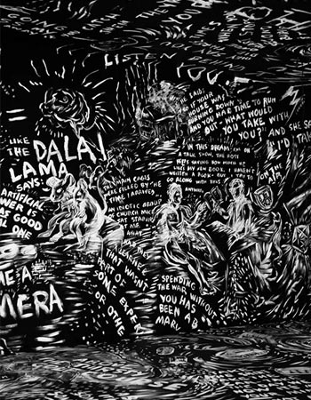
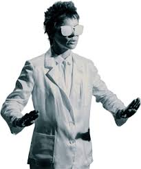

Laurie Aderson
Arte, lenguaje y tecnología.



tecnología, narrativa y experimentación.
El trabajo de Laurie Anderson se carateriza por la integración de tecnología en sus procesos creativos, no como un fin en sí mismo, sino como herramienta para expadir el lenguaje artístico. Utiliza dispositivos eletronicos, procesamiento de voz y medios audivisuales para construir experiencias que combinan relatos y experimentación.
Sus obras suelen desarrollarse como narraciones fragmentadas, donde la voz guía al espectador a través de historias que mezclan lo personal, lo político y lo fivticion. Este enfoque permite explorar nuevas formas de contar, donde las estructura no es lineal y la interpretación queda abierta.
Obras y conceptos claves
- O superman
- United States live
- Big Science
El leguaje como materia artística
El lenguaje ocupa un lugar central en la obra de Laurie Anderson. Sus piezas exploraron cómon las palabras contruye significados y cómo puede ser transformadas mediante la repetición, la fragmetaión y el uso de tecnología.
A través de esta estrategias, el leguaje deja de ser únicamente un medio de comunicación para convertirse en un material artístico. Sus obras revelan las tensiones entre lo que se dice, lo que se escucha y lo que se intepreta.
La performance como experiencia.
la performance es uno de los principales formatos en los que desarrolla su trabajo. En sus presentaciones,combina música, proyeccion visuales y narración en vivo para crear experiencia inmersivas.
Estas performances no solo transmiten un contenido, sino que construyen un espacio de interación con el público . La presentacia del cuerpo, la voz y la tecnología genera una relación directa que redefine el rol del espectador.
Cruces entre arte y tecnología.
Laurie Anderson ha sido una pionera en la incorporación de nuevas tecnología en el arte. Desde instrumentos mofificados hasta sistemas digitales, su trabajo investiga cómo la tecnología puede influir en la creación y la percepción artística.
Este cruce permitió ampliar las posibilidades del arte conteporáneo, integrando harramientas que transforman tanto los procesos como los resultados. Sus obras continúa siendo relevante en su contexto donde la tecnología ocupa un lugar central en la cultura.
Ir al Gmail